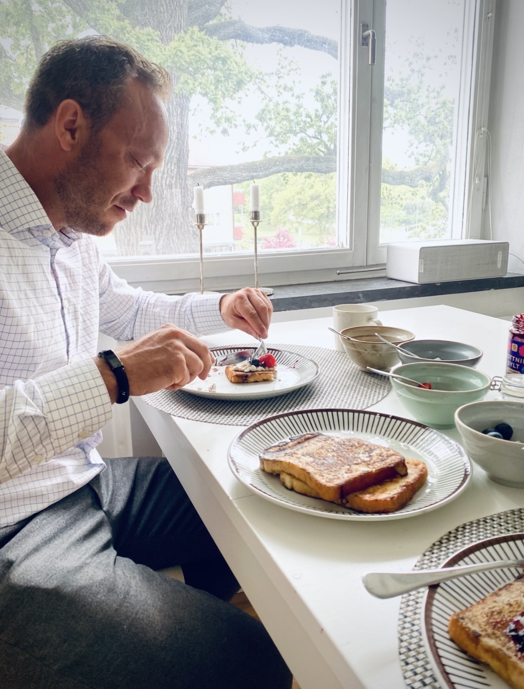

Vi är slumpen i dess mest utmärkta av former.
Jag tror inte på Gud, inget liv efter döden, inte på ödet, inte på karma – inget är förutbestämt.
För mig existerar livet här och nu, för det är det enda du verkligen vet sker: stunderna.
Jag planerar inte för framtiden; jag sätter upp mål, förstår att den kommer och försöker enbart styra den så att den sker i rätt riktning.
Jag anser att hela livet är uppbyggt på en form av Sliding Doors-koncept – det vi kallar slumpen.
Att Simon tyckte det var för varmt och var lite seg när vi skulle shoppa på Åhléns City, så vi valde att åka hem – fem minuter senare körde lastbilen in på Drottninggatan, och då befann vi oss helt i ovisshet, tryggt nere i tunnelbanan.
Eller att mamma och pappa, som träffades under en teateruppsättning – båda dök upp och hade tagit lika fel på tiden till en repetition som inte skulle vara – hur mamma bara stod och hoppades att pappa skulle bjuda ut henne och hade tänkt så länge, hur pappa inte alls förstod att ”ett sånt bombnedslag till kvinna” var intresserad av just honom; de stod där i nästan en timme innan han till slut sa: ”Ska vi ta en promenad?”, och det slutade med en kyss under en gatulykta på Söder. Snart firar de 57 år som gifta.
Bara en sån sak som att jag föddes på andra sidan jordklotet, till vad som hade blivit ett helt annat liv, bevisar hur lite makt man egentligen har och att de beslut vi tar inte nödvändigtvis innebär att utgången blir som tänkt ändå. Aldrig vet man vart livet tar en; det finns ingen gardering. Brukar säga: Spänn fast dig och försök njuta av åkturen.
Så skedde vi, och det har inte gjort mig troende, men det vidgade mitt perspektiv på saker som kan ske.
Att två totalt främmande människor, helt utan några som helst kopplingar, bland alla dessa miljoner av folk, hittar just sin person – den där som det inte finns någon logisk förklaring för utan som är en känsla, en känsla lika tydlig som att jorden är rund och himlen är grå (ja, vi bor ändå i Sverige).
Du och jag är som skapta för varandra – inte från start, inte alls så. Kanske låg det ett litet frö som vid det simplaste ”hej” var som vattnet det behövde och genast började växa, och det har aldrig slutat sedan dess.
Kanske låter det onödigt romantiserande, men jag är helt fascinerad av oss, vår resa, hur otroligt unik och fantastisk den varit.
Jag är kär i oss.
Så om det är något jag tror på, så är det att detta omöjligt är slutet; sista kapitlet har inte skett – det finns att finna i framtiden.
Ingenting kommer kunna ändra på den vetskapen hos mig.
Din för evigt.